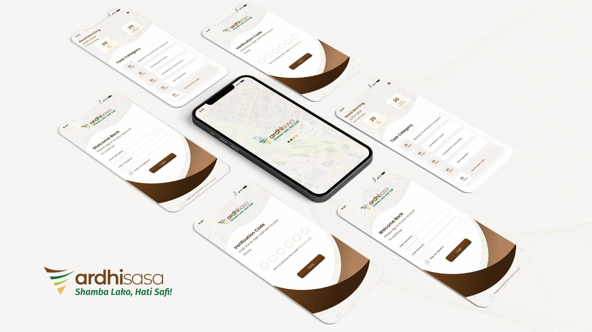
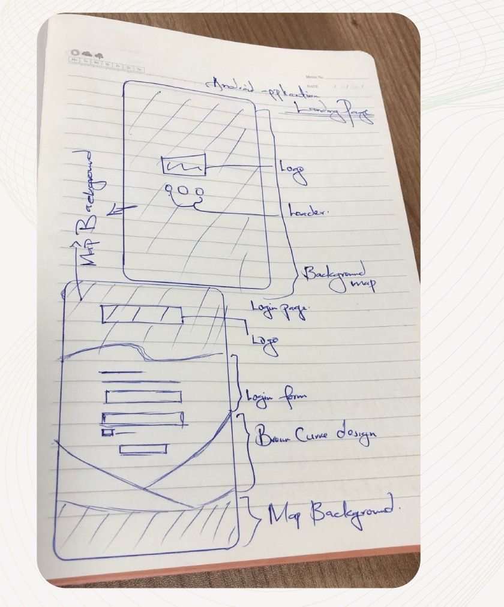
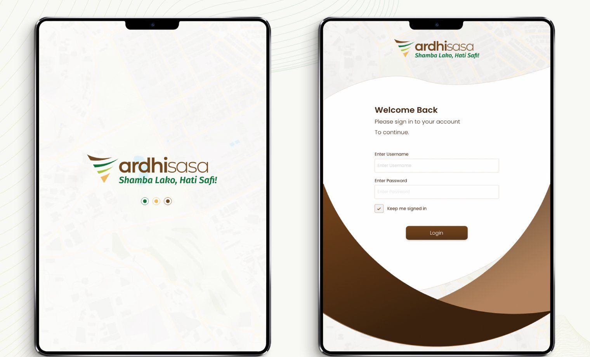
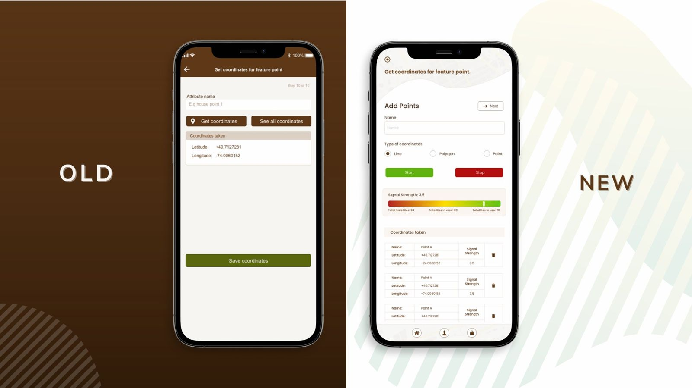
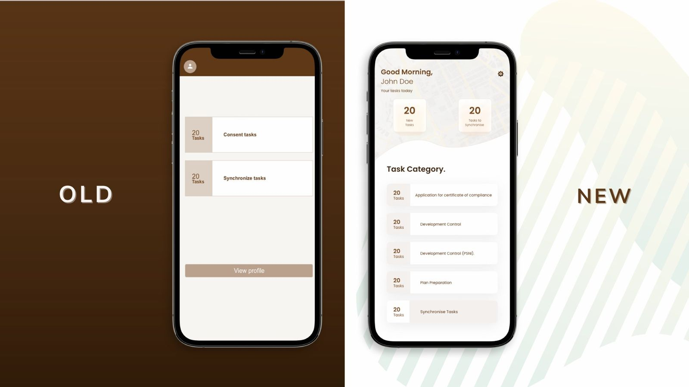
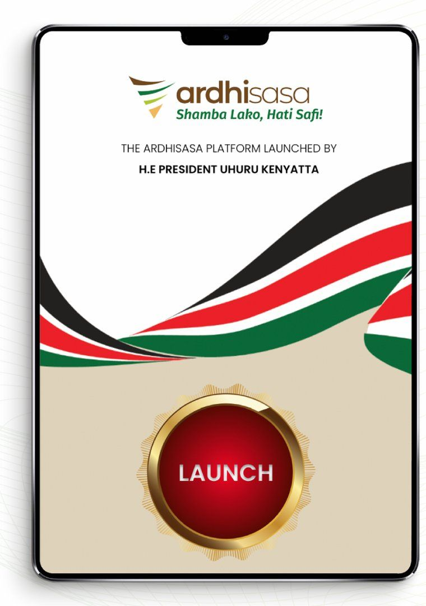
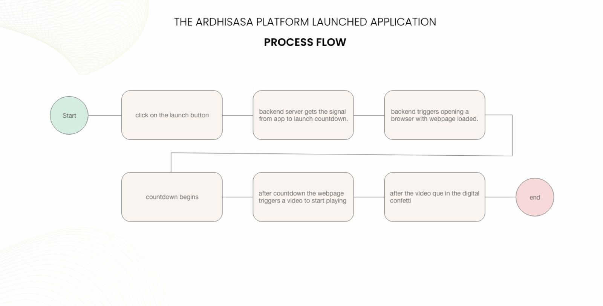
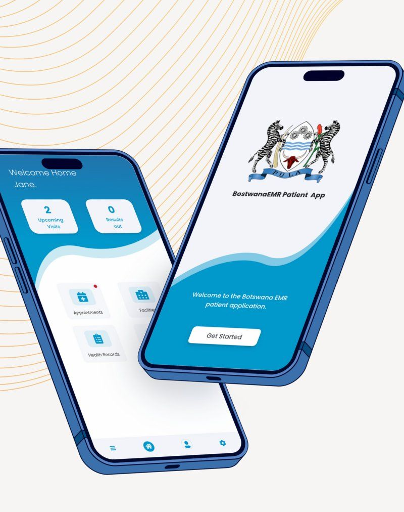
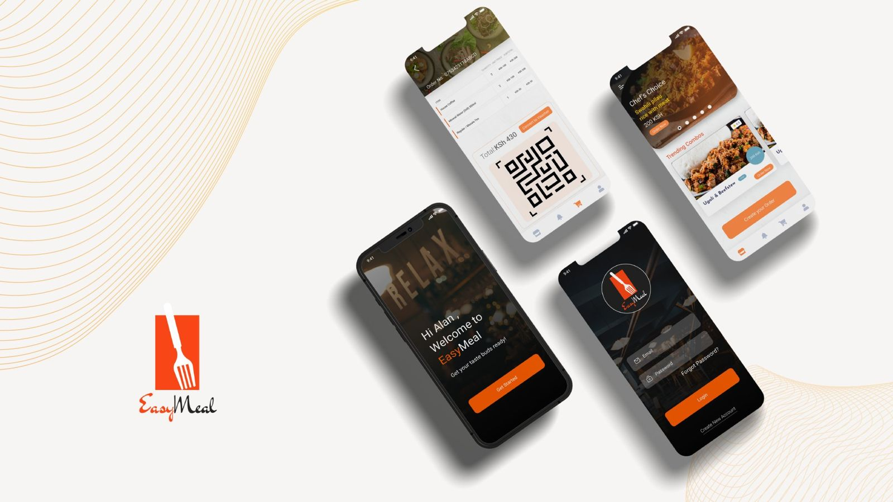
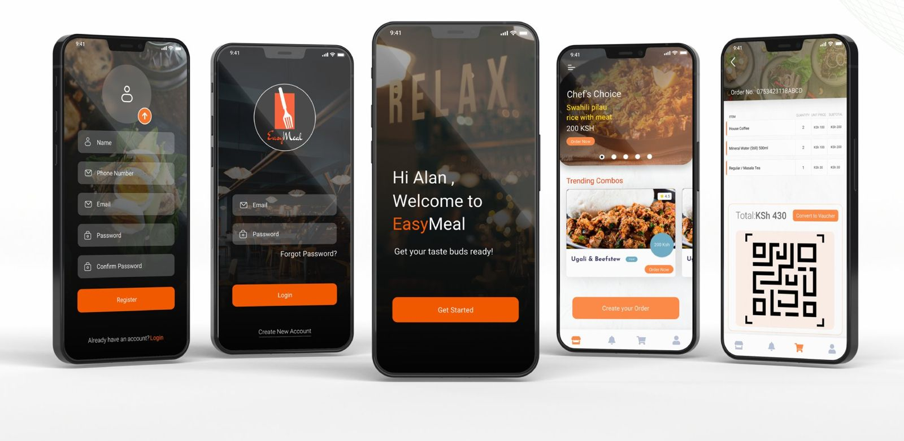

Product Design Lead and UX Strategist. Eight years designing and reviewing digital platforms for national health systems, government, fintech and AI products across Kenya, Ethiopia, Botswana and the United States.
I take products from research and information architecture through to high-fidelity prototypes and developer handoff. Because I also write front-end code, my recommendations come with a clear view of how they will be built.
Much of my work is for users who are easy to design badly for: field health workers on low-bandwidth phones, land surveyors working offline, clinicians in busy facilities, and citizens using government services for the first time.
Today I lead UX consulting engagements, from platform reviews and pre-build assessments to full redesigns, alongside product design for growing businesses.
Much of my client work is under NDA. Walkthroughs of that work are available on request.
Kenya’s national digital land platform, giving citizens, professionals and government a single place to interact with land information and processes.
I was UI/UX Lead for the platform’s Android applications, including the app field surveyors use to capture land data, and I led the team that built the app used to launch the platform nationally.

The app is used in the field, so the landing screen sits on a map background. The sign-in form is framed like a parcel of fenced land seen from above, and the sweeping curves borrow from sand dunes, rendered in the client’s brand colours.


During testing, a surveyor reported that pinning exact coordinates was hard because the app gave no sense of GPS signal quality. Points were being saved without anyone knowing whether they could be trusted.
I worked with stakeholders and the Android team on a signal-strength scale, inspired by a pH scale, that slides from weak to strong in real time and shows satellites in view and in use. Every captured point also records its signal strength, so accuracy can be checked later.
The home screen: a greeting, counters for tasks assigned and completed, and tasks grouped by category, in the same visual language as sign-in.


Ardhisasa was launched by President Uhuru Kenyatta. We built a simple Android app for the occasion: pressing the launch button set off a countdown on the venue’s large screens, followed by a video and confetti as the portal went live.
Assembled a team of three developers, set the timeline, defined the concept and requirements, and presented to stakeholders.
Designed the launch app and the countdown experience from the requirements.
Built the countdown website in HTML and JavaScript. The app ran on Android with a Python backend.



Replacing paper-based records in Botswana’s health facilities with an electronic medical record built on OpenMRS.
Paper records were slow to work with, error-prone and hard to share between facilities. The challenge was to give clinicians and administrators a system faster than paper, with access to sensitive patient data tightly controlled.
Clinical screens are confidential; a walkthrough is available on request.
A cafeteria app that lets members of an organisation book their meals for the next day or the whole week.
I was contracted to design the app and create the concept for the Android build, from sketches of the sign-in, registration and home pages to final screens.
A dark, food-first interface with a single orange action colour, so the next step is always obvious.


I use the same method for website and platform reviews, most recently for ADHN’s website assessment and SAIIL’s UX review. The output is a short, prioritised list your team can act on, not a long report.
Goals, users, launch timeline and constraints with your team.
Heuristic evaluation of key journeys, finding friction and error-prone steps.
Navigation, information architecture, content clarity, task completion.
Hierarchy, components, responsiveness and WCAG 2.1 AA checks.
Typography, colour, imagery, icons and tone across every screen.
Annotated findings ranked by priority, presented to your team.
| Priority | Area | Finding | Recommendation |
|---|---|---|---|
| Before launch | Sign-up · Usability | Errors only appear after submitting the whole form | Validate inline, field by field, in plain language |
| Fix soon | Interface · Accessibility | Grey helper text fails WCAG contrast on white | Darken to meet the 4.5:1 contrast ratio and update the token |
| Later | Brand consistency | Three button styles used for the same primary action | Consolidate into one primary button component |
Most of my recent work is covered by client confidentiality. I’m happy to walk through any of these projects, including my role, decisions and outcomes, in a call.
National vaccination platform: dashboards for national and county administrators, and mobile-first data capture for field health workers.
Website assessment, migration and redesign for the Africa Digital Health Network, moving into a member platform.
UX and navigation review, an on-site resources library, and separate staff and public access to the sandbox/testbed.
Founding UI/UX designer: design system, broadcast platform UX and AI content pipelines for a 0-to-1 startup.
Pharmaceutical systems: simplified complex workflows and reusable patterns for data-heavy tables, analytics and forms.
Business analysis and UX for an ophthalmology EMR: patient records, supplies, staffing and scheduling.
Redesign with course application and payment, a student portal and a role-based admin portal.
Rebrand and WordPress CMS rebuild with M-Pesa payments and event management.
Introduction video and full design handoff for a business spend and payout platform.